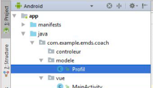
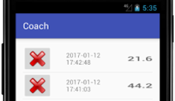

Des réalisations pour progresser entre développement, logique technique et culture SISR.
Ces projets ont été choisis pour montrer des approches différentes : traitement d'images,
développement mobile et conception web. Ils complètent mon parcours SISR en renforçant ma
capacité à comprendre un besoin, structurer une solution et utiliser les bons outils.
Application de scan de pictogrammes
Projet personnel orienté analyse visuelle pour détecter ou identifier des pictogrammes à partir d'images.
Travail sur la logique de traitement d'images et la reconnaissance visuelle.
Approche utile pour développer rigueur, tests progressifs et compréhension des entrées et sorties.
Projet intéressant à valoriser pour montrer une curiosité technique au-delà des exercices classiques.
PythonOpenCVOCR
Widget météo Android
Réalisation d'un widget météo sur Android Studio avec affichage de données dynamiques et logique mobile.
Construction d'une interface Android et intégration de composants adaptés au mobile.
Récupération ou affichage de données météo dans un format lisible pour l'utilisateur.
Projet utile pour travailler la structure de l'application, le format JSON et l'intégration d'API.
Android StudioAPI météoJSON
Exemple d'interface et d'organisation visuelle côté mobile.

Travail de structuration du projet et séparation des responsabilités.

Utilisation d'adapters pour gérer l'affichage et la présentation des données.
Site web sur la nutrition
Développement d'un site autour de la nutrition avec un travail sur le front-end, le back-end et la gestion des données.
Conception d'une application web structurée avec une logique métier claire.
Travail sur les vues, les routes, la base de données et la cohérence globale de l'expérience.
Projet utile pour montrer comment mes bases en développement complètent mon profil technique global.
RubyRuby on RailsHTMLCSSJavaScriptSQL
Vignettes demandées
Réalisations prévues ou à compléter
Conformément à la consigne, ces vignettes cliquables sont préparées pour accueillir les futures
présentations liées au stage et à l'atelier 2.
Les liens GitHub et les captures supplémentaires pourront être ajoutés dès que tu me donnes les
URLs ou les visuels exacts. Pour l'instant, cette page pose une base propre et professionnelle
pour valoriser tes projets sur le portfolio.